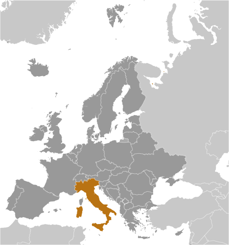
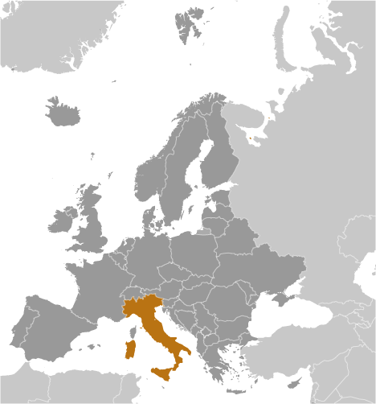

Europe :: ITALY
Introduction :: ITALY
-
Italy became a nation-state in 1861 when the regional states of the peninsula, along with Sardinia and Sicily, were united under King Victor EMMANUEL II. An era of parliamentary government came to a close in the early 1920s when Benito MUSSOLINI established a Fascist dictatorship. His alliance with Nazi Germany led to Italy's defeat in World War II. A democratic republic replaced the monarchy in 1946 and economic revival followed. Italy is a charter member of NATO and the European Economic Community (EEC) and its subsequent successors the EC and the EU. It has been at the forefront of European economic and political unification, joining the Economic and Monetary Union in 1999. Persistent problems include sluggish economic growth, high youth and female unemployment, organized crime, corruption, and economic disparities between southern Italy and the more prosperous north.
Geography :: ITALY
-
Southern Europe, a peninsula extending into the central Mediterranean Sea, northeast of Tunisia42 50 N, 12 50 EEuropetotal: 301,340 sq kmland: 294,140 sq kmwater: 7,200 sq kmnote: includes Sardinia and Sicilycountry comparison to the world: 73almost twice the size of Georgia; slightly larger than Arizonatotal: 1,836.4 kmborder countries (6): Austria 404 km, France 476 km, Holy See (Vatican City) 3.4 km, San Marino 37 km, Slovenia 218 km, Switzerland 698 km7,600 kmterritorial sea: 12 nmcontinental shelf: 200-m depth or to the depth of exploitationpredominantly Mediterranean; alpine in far north; hot, dry in southmostly rugged and mountainous; some plains, coastal lowlandsmean elevation: 538 melevation extremes: lowest point: Mediterranean Sea 0 mhighest point: Mont Blanc (Monte Bianco) de Courmayeur 4,748 m (a secondary peak of Mont Blanc)coal, mercury, zinc, potash, marble, barite, asbestos, pumice, fluorspar, feldspar, pyrite (sulfur), natural gas and crude oil reserves, fish, arable landagricultural land: 47.1%arable land 22.8%; permanent crops 8.6%; permanent pasture 15.7%forest: 31.4%other: 21.5% (2011 est.)39,500 sq km (2012)despite a distinctive pattern with an industrial north and an agrarian south, a fairly even population distribution exists throughout most of the country, with coastal areas, the Po River Valley, and urban centers (particularly Milan, Rome, and Naples), attracting larger and denser populationsregional risks include landslides, mudflows, avalanches, earthquakes, volcanic eruptions, flooding; land subsidence in Venicevolcanism: significant volcanic activity; Etna (3,330 m), which is in eruption as of 2010, is Europe's most active volcano; flank eruptions pose a threat to nearby Sicilian villages; Etna, along with the famous Vesuvius, which remains a threat to the millions of nearby residents in the Bay of Naples area, have both been deemed Decade Volcanoes by the International Association of Volcanology and Chemistry of the Earth's Interior, worthy of study due to their explosive history and close proximity to human populations; Stromboli, on its namesake island, has also been continuously active with moderate volcanic activity; other historically active volcanoes include Campi Flegrei, Ischia, Larderello, Pantelleria, Vulcano, and Vulsiniair pollution from industrial emissions such as sulfur dioxide; coastal and inland rivers polluted from industrial and agricultural effluents; acid rain damaging lakes; inadequate industrial waste treatment and disposal facilitiesparty to: Air Pollution, Air Pollution-Nitrogen Oxides, Air Pollution-Persistent Organic Pollutants, Air Pollution-Sulfur 85, Air Pollution-Sulfur 94, Air Pollution-Volatile Organic Compounds, Antarctic-Environmental Protocol, Antarctic-Marine Living Resources, Antarctic Seals, Antarctic Treaty, Biodiversity, Climate Change, Climate Change-Kyoto Protocol, Desertification, Endangered Species, Environmental Modification, Hazardous Wastes, Law of the Sea, Marine Dumping, Ozone Layer Protection, Ship Pollution, Tropical Timber 83, Tropical Timber 94, Wetlands, Whalingsigned, but not ratified: none of the selected agreementsstrategic location dominating central Mediterranean as well as southern sea and air approaches to Western Europe
People and Society :: ITALY
-
62,137,802 (July 2017 est.)country comparison to the world: 23noun: Italian(s)adjective: ItalianItalian (includes small clusters of German-, French-, and Slovene-Italians in the north and Albanian-Italians and Greek-Italians in the south)Italian (official), German (parts of Trentino-Alto Adige region are predominantly German speaking), French (small French-speaking minority in Valle d'Aosta region), Slovene (Slovene-speaking minority in the Trieste-Gorizia area)Christian 80% (overwhelmingly Roman Catholic with very small groups of Jehovah's Witnesses and Protestants), Muslim (about 800,000 to 1 million), atheist and agnostic 20%0-14 years: 13.65% (male 4,334,457/female 4,146,726)15-24 years: 9.66% (male 3,008,228/female 2,996,854)25-54 years: 42.16% (male 12,933,634/female 13,265,541)55-64 years: 12.99% (male 3,914,061/female 4,159,859)65 years and over: 21.53% (male 5,758,197/female 7,620,245) (2017 est.)total dependency ratio: 56.5youth dependency ratio: 21.5elderly dependency ratio: 35potential support ratio: 2.9 (2015 est.)total: 45.5 yearsmale: 44.4 yearsfemale: 46.5 years (2017 est.)country comparison to the world: 60.19% (2017 est.)country comparison to the world: 1858.6 births/1,000 population (2017 est.)country comparison to the world: 21510.4 deaths/1,000 population (2017 est.)country comparison to the world: 323.7 migrant(s)/1,000 population (2017 est.)country comparison to the world: 32despite a distinctive pattern with an industrial north and an agrarian south, a fairly even population distribution exists throughout most of the country, with coastal areas, the Po River Valley, and urban centers (particularly Milan, Rome, and Naples), attracting larger and denser populationsurban population: 69.3% of total population (2017)rate of urbanization: 0.32% annual rate of change (2015-20 est.)ROME (capital) 3.718 million; Milan 3.099 million; Naples 2.202 million; Turin 1.765 million; Palermo 853,000; Bergamo 840,000 (2015)at birth: 1.06 male(s)/female0-14 years: 1.04 male(s)/female15-24 years: 1 male(s)/female25-54 years: 0.98 male(s)/female55-64 years: 0.94 male(s)/female65 years and over: 0.75 male(s)/femaletotal population: 0.93 male(s)/female (2016 est.)30.7 years (2014 est.)4 deaths/100,000 live births (2015 est.)country comparison to the world: 178total: 3.3 deaths/1,000 live birthsmale: 3.5 deaths/1,000 live birthsfemale: 3 deaths/1,000 live births (2017 est.)country comparison to the world: 210total population: 82.3 yearsmale: 79.6 yearsfemale: 85.1 years (2017 est.)country comparison to the world: 151.44 children born/woman (2017 est.)country comparison to the world: 2069.2% of GDP (2014)country comparison to the world: 363.95 physicians/1,000 population (2014)3.4 beds/1,000 population (2011)improved:urban: 100% of populationrural: 100% of populationtotal: 100% of populationunimproved:urban: 0% of populationrural: 0% of populationtotal: 0% of population (2015 est.)improved:urban: 99.5% of populationrural: 99.6% of populationtotal: 99.5% of populationunimproved::urban: 0.5% of populationrural: 0.4% of populationtotal: 0.5% of population (2015 est.)0.3% (2016 est.)country comparison to the world: 85130,000 (2016 est.)country comparison to the world: 3419.9% (2016)country comparison to the world: 1074.2% of GDP (2013)country comparison to the world: 93definition: age 15 and over can read and writetotal population: 99.2%male: 99.4%female: 99% (2015 est.)total: 16 yearsmale: 16 yearsfemale: 17 years (2014)total: 40.3%male: 38.8%female: 42.6% (2015 est.)country comparison to the world: 17
Government :: ITALY
-
conventional long form: Italian Republicconventional short form: Italylocal long form: Repubblica Italianalocal short form: Italiaformer: Kingdom of Italyetymology: derivation is unclear, but the Latin "Italia" may come from the Oscan "Viteliu" meaning "[Land] of Young Cattle" (the bull was a symbol of southern Italic tribes)parliamentary republicname: Romegeographic coordinates: 41 54 N, 12 29 Etime difference: UTC+1 (6 hours ahead of Washington, DC, during Standard Time)daylight saving time: +1hr, begins last Sunday in March; ends last Sunday in October15 regions (regioni, singular - regione) and 5 autonomous regions (regioni autonome, singular - regione autonoma)regions: Abruzzo, Basilicata, Calabria, Campania, Emilia-Romagna, Lazio (Latium), Liguria, Lombardia, Marche, Molise, Piemonte (Piedmont), Puglia (Apulia), Toscana (Tuscany), Umbria, Veneto (Venetia)autonomous regions: Friuli-Venezia Giulia; Sardegna (Sardinia); Sicilia (Sicily); Trentino-Alto Adige (Trentino-South Tyrol) or Trentino-Suedtirol (German); Valle d'Aosta (Aosta Valley) or Vallee d'Aoste (French)17 March 1861 (Kingdom of Italy proclaimed; Italy was not finally unified until 1871)Republic Day, 2 June (1946)history: previous 1848 (originally for the Kingdom of Sardinia and adopted by the Kingdom of Italy in 1861); latest enacted 22 December 1947, adopted 27 December 1947, entered into force 1 January 1948amendments: proposed by both houses of Parliament; passage requires two successive debates and approval by absolute majority of each house on the second vote; a referendum is only required when requested by one-fifth of the members of either house, by voter petition, or by five Regional Councils (elected legislative assemblies of the 15 first-level administrative regions and 5 autonomous regions of Italy); referendum not required if an amendment has been approved by a two-thirds majority in each house in the second vote; amended many times, last in 2012; note - a referendum held on 4 December 2016 on constitutional amendments was defeated (2017)civil law system; judicial review of legislation under certain conditions in Constitutional Courtaccepts compulsory ICJ jurisdiction with reservations; accepts ICCt jurisdictioncitizenship by birth: nocitizenship by descent only: at least one parent must be a citizen of Italydual citizenship recognized: yesresidency requirement for naturalization: 4 years for EU nationals, 5 years for refugees and specified exceptions, 10 years for all others18 years of age; universal except in senatorial elections, where minimum age is 25chief of state: President Sergio MATTARELLA (since 3 February 2015)head of government: Prime Minister Paolo GENTILONI (since 12 December 2016); note - Prime Minister Matteo RENZI (since 22 February 2014) resigned 12 December 2016; the prime minister's official title is President of the Council of Ministerscabinet: Council of Ministers proposed by the prime minister, known officially as the President of the Council of Ministers and locally as the Premier; nominated by the presidentelections/appointments: president indirectly elected by an electoral college consisting of both houses of Parliament and 58 regional representatives for a 7-year term (no term limits); election last held on 31 January 2015 (next to be held in 2022); prime minister appointed by the president, confirmed by parliamentelection results: Sergio MATTARELLA (PD) elected president; electoral college vote count in fourth round - 665 out of 1,009 (505-vote threshold)description: bicameral Parliament or Parlamento consists of the Senate or Senato della Repubblica (322 seats; 315 members directly elected in single- and multi-seat constituencies by proportional representation vote to serve 5-year terms and 7 ex-officio members appointed by the president of the Republic to serve for life) and the Chamber of Deputies or Camera dei Deputati (630 seats; 629 members directly elected in single- and multi-seat constituencies by proportional representation vote and 1 member from Valle d'Aosta elected by simple majority vote; members serve 5-year terms)elections: Senate - last held on 24-25 February 2013 (next to be held in May 2018); Chamber of Deputies - last held on 24-25 February 2013 (next to be held by 20 May 2018)election results: Senate - percent of vote by party - NA; seats by party - center-left coalition 123 (PD 111, SEL 7, SVP 2, other 3), center-right coalition 117 (PdL 98, LN 18, other 1), M5S 54, centrist coalition 19, other 2Chamber of Deputies - percent of vote by party - NA; seats by party - center-left coalition 345 (PD 297, SEL 37, CD 6 SVP 5), center-right coalition 125 (PdL 98, LN 18, FdI-AN 9), M5S 109, centrist coalition 47, other 3highest court(s): Supreme Court of Cassation or Corte Suprema di Cassazione consists of the first president (chief justice), deputy president, 54 justices presiding over 6 civil and 7 criminal divisions, and 288 judges; an additional 30 judges of lower courts serve as supporting judges; cases normally heard by 5-judge panels; more complex cases heard by 9-judge panels; Constitutional Court or Corte Costituzionale (consists of the court president and 14 judges)judge selection and term of office: Supreme Court judges appointed by the High Council of the Judiciary, headed by the president of the republic; judges may serve for life; Constitutional Court judges - 5 appointed by the president, 5 elected by parliament, 5 elected by select higher courts; judges serve up to 9 yearssubordinate courts: various lower civil and criminal courts (primary and secondary tribunals, courts, and courts of appeal)Ruling left-center-right coalition: Civic Choice or SC [Enrico ZANETTI]Democratic Centre or CD [Bruno TABACCI]Democratic Party or PD [Matteo RENZI]Popular Alliance or AP [Angelino ALFANO] (formerly New Center-Right or NCD)Union of the Center or UdC [Pier Fernando CASSINI]Center-right opposition: Brothers of Italy-National Alliance or FdI-AN [Giorgia MELONI, Ignazio LA RUSSA, and Guido CROSETTO]Forza Italia [Silvio BERLUSCONI] (formerly People of Freedom or PdL)Northern League or LN [Matteo SALVINI]Other parties and parliamentary groups: Five Star Movement or M5S [Luigi DI MAIO]Liberal Popular Alliance or ALA [Denis VERDINI]Movement of Democrats and Progressives or DP [Roberto SPERANZA]Sinistra Italiani [Nicola FRATOIANNI] (formerly Sinistra Ecologia Liberta or SEL)South Tyrolean People's Party or SVP [Philipp ACHAMMER]manufacturers and merchants associations: ConfcommercioConfindustriaorganized farm groups: ConfcoltivatoriConfagricolturamajor trade union confederations: Confederazione Generale Italiana del Lavoro or CGIL [Susanna CAMUSSO] (left wing)Confederazione Italiana dei Sindacati Lavoratori or CISL [Raffaele BONANNI] (Roman Catholic centrist)Unione Italiana del Lavoro or UIL [Luigi ANGELETTI] (lay centrist)other: Roman Catholic ChurchADB (nonregional member), AfDB (nonregional member), Arctic Council (observer), Australia Group, BIS, BSEC (observer), CBSS (observer), CD, CDB, CE, CEI, CERN, EAPC, EBRD, ECB, EIB, EITI (implementing country), EMU, ESA, EU, FAO, FATF, G-7, G-8, G-10, G-20, IADB, IAEA, IBRD, ICAO, ICC (national committees), ICCt, ICRM, IDA, IEA, IFAD, IFC, IFRCS, IGAD (partners), IHO, ILO, IMF, IMO, IMSO, Interpol, IOC, IOM, IPU, ISO, ITSO, ITU, ITUC (NGOs), LAIA (observer), MIGA, MINURSO, MINUSMA, NATO, NEA, NSG, OAS (observer), OECD, OPCW, OSCE, Pacific Alliance (observer), Paris Club, PCA, PIF (partner), Schengen Convention, SELEC (observer), SICA (observer), UN, UN Security Council (temporary), UNCTAD, UNESCO, UNHCR, UNIDO, UNIFIL, Union Latina, UNMOGIP, UNRWA, UNTSO, UNWTO, UPU, WCO, WHO, WIPO, WMO, WTO, ZCchief of mission: Ambassador Armando VARRICCHIO (since 2 March 2016)chancery: 3000 Whitehaven Street NW, Washington, DC 20008telephone: [1] (202) 612-4400FAX: [1] (202) 518-2151consulate(s) general: Boston, Chicago, Detroit, Houston, Miami, New York, Los Angeles, Philadelphia, San Franciscoconsulate(s): Charlotte (NC), Cleveland (OH), Detroit (MI), Hattiesburg (MS), Honolulu (HI), New Orleans, Newark (NJ), Norfolk (VA), Pittsburgh (PA), Portland (OR), Seattlechief of mission: Ambassador Lewis EISENBERG (since 4 October 2017) note - also accredited to San Marinoembassy: Via Vittorio Veneto 121, 00187-Romemailing address: PSC 59, Box 100, APO AE 09624telephone: (+39)06.46741FAX: [39] (06) 4674-2244consulate(s) general: Florence, Milan, Naplesthree equal vertical bands of green (hoist side), white, and red; design inspired by the French flag brought to Italy by Napoleon in 1797; colors are those of Milan (red and white) combined with the green uniform color of the Milanese civic guardnote: similar to the flag of Mexico, which is longer, uses darker shades of red and green, and has its coat of arms centered on the white band; Ireland, which is longer and is green (hoist side), white, and orange; also similar to the flag of the Cote d'Ivoire, which has the colors reversed - orange (hoist side), white, and greenwhite, five-pointed star (Stella d'Italia); national colors: red, white, greenname: "Il Canto degli Italiani" (The Song of the Italians)lyrics/music: Goffredo MAMELI/Michele NOVAROnote: adopted 1946; the anthem, originally written in 1847, is also known as "L'Inno di Mameli" (Mameli's Hymn), and "Fratelli D'Italia" (Brothers of Italy)
Economy :: ITALY
-
Italy has a diversified economy, which is divided into a developed industrial north, dominated by private companies, and a less-developed, highly subsidized, agricultural south, where unemployment is higher. The Italian economy is driven in large part by the manufacture of high-quality consumer goods produced by small and medium-sized enterprises, many of them family-owned. Italy also has a sizable underground economy, which by some estimates accounts for as much as 17% of GDP. These activities are most common within the agriculture, construction, and service sectors.Italy is the third-largest economy in the euro zone, but its exceptionally high public debt and structural impediments to growth have rendered it vulnerable to scrutiny by financial markets. Public debt has increased steadily since 2007, reaching 133% of GDP in 2016. Investor concerns about Italy and the broader euro-zone crisis eased in 2013, bringing down Italy's borrowing costs on sovereign government debt from euro-era records. The government still faces pressure from investors and European partners to sustain its efforts to address Italy's longstanding structural impediments to growth, such as labor market inefficiencies, a sluggish judicial system, and a weak banking sector. Italy’s economy returned to modest growth in late 2014 for the first time since late 2011. In 2015-16, Italy’s economy grew 0.7% each year. In 2016, overall unemployment was 11.7%, but youth unemployment remains high at 37.1%.$2.234 trillion (2016 est.)$2.187 trillion (2015 est.)$2.146 trillion (2014 est.)note: data are in 2016 dollarscountry comparison to the world: 13$1.851 trillion (2016 est.)0.9% (2016 est.)0.8% (2015 est.)0.1% (2014 est.)country comparison to the world: 178$36,800 (2016 est.)$36,400 (2015 est.)$36,100 (2014 est.)note: data are in 2016 dollarscountry comparison to the world: 5119.6% of GDP (2016 est.)18.8% of GDP (2015 est.)18.9% of GDP (2014 est.)country comparison to the world: 99household consumption: 60.6%government consumption: 18.9%investment in fixed capital: 17%investment in inventories: 0.1%exports of goods and services: 30%imports of goods and services: -26.5% (2016 est.)agriculture: 2.1%industry: 24.1%services: 73.8% (2016 est.)fruits, vegetables, grapes, potatoes, sugar beets, soybeans, grain, olives; beef, dairy products; fishtourism, machinery, iron and steel, chemicals, food processing, textiles, motor vehicles, clothing, footwear, ceramics1.5% (2016 est.)country comparison to the world: 12725.76 million (2016 est.)country comparison to the world: 25agriculture: 3.9%industry: 28.3%services: 67.8% (2011)11.7% (2016 est.)11.9% (2015 est.)country comparison to the world: 14729.9% (2012 est.)lowest 10%: 2.3%highest 10%: 26.8% (2000)31.9 (2012 est.)27.3 (1995)country comparison to the world: 116revenues: $872.6 billionexpenditures: $917.7 billion (2016 est.)47.1% of GDP (2016 est.)country comparison to the world: 20-2.4% of GDP (2016 est.)country comparison to the world: 100132.5% of GDP (2016 est.)132.1% of GDP (2015 est.)note: Italy reports its data on public debt according to guidelines set out in the Maastricht Treaty; general government gross debt is defined in the Maastricht Treaty as consolidated general government gross debt at nominal value, outstanding at the end of the year, in the following categories of government liabilities (as defined in ESA95): currency and deposits (AF.2), securities other than shares excluding financial derivatives (AF.3, excluding AF.34), and loans (AF.4); the general government sector comprises the central government, state government, local government and social security fundscountry comparison to the world: 4calendar year-0.1% (2016 est.)0.1% (2015 est.)country comparison to the world: 460.25% (31 December 2013)0.75% (31 December 2012)note: this is the European Central Bank's rate on the marginal lending facility, which offers overnight credit to banks in the euro areacountry comparison to the world: 1403.5% (31 December 2016 est.)4.13% (31 December 2015 est.)country comparison to the world: 162$1.101 trillion (31 December 2016 est.)$1.027 trillion (31 December 2015 est.)note: see entry for the European Union for money supply for the entire euro area; the European Central Bank (ECB) controls monetary policy for the 18 members of the Economic and Monetary Union (EMU); individual members of the EMU do not control the quantity of money circulating within their own borderscountry comparison to the world: 7$1.519 trillion (31 December 2016 est.)$1.497 trillion (31 December 2015 est.)country comparison to the world: 11$3.024 trillion (31 December 2016 est.)$3.053 trillion (31 December 2015 est.)country comparison to the world: 7$587.3 billion (31 December 2014 est.)$615.5 billion (31 December 2013 est.)$480.5 billion (31 December 2012 est.)country comparison to the world: 20$47.31 billion (2016 est.)$26.12 billion (2015 est.)country comparison to the world: 11$454.1 billion (2016 est.)$449.6 billion (2015 est.)country comparison to the world: 10engineering products, textiles and clothing, production machinery, motor vehicles, transport equipment, chemicals; foodstuffs, beverages, and tobacco; minerals, nonferrous metalsGermany 12.6%, France 10.5%, US 8.9%, UK 5.4%, Spain 5%, Switzerland 4.6% (2016)$387.1 billion (2016 est.)$393.4 billion (2015 est.)country comparison to the world: 13engineering products, chemicals, transport equipment, energy products, minerals and nonferrous metals, textiles and clothing; food, beverages, tobaccoGermany 16.3%, France 8.9%, China 7.5%, Netherlands 5.5%, Spain 5.3%, Belgium 4.9% (2016)$136 billion (31 December 2016 est.)$130.6 billion (31 December 2015 est.)country comparison to the world: 17$2.444 trillion (31 March 2016 est.)$2.3 trillion (31 March 2015 est.)country comparison to the world: 10$471.7 billion (31 December 2016 est.)$457.1 billion (31 December 2015 est.)country comparison to the world: 18$584.1 billion (31 December 2016 est.)$587.3 billion (31 December 2015 est.)country comparison to the world: 16euros (EUR) per US dollar -0.9214 (2016 est.)0.885 (2015 est.)0.885 (2014 est.)0.7634 (2013 est.)0.7752 (2012 est.)
Energy :: ITALY
-
electrification - total population: 100% (2016)269.3 billion kWh (2015 est.)country comparison to the world: 15296 billion kWh (2015 est.)country comparison to the world: 136.155 billion kWh (2016 est.)country comparison to the world: 3143.18 billion kWh (2016 est.)country comparison to the world: 3117 million kW (2015 est.)country comparison to the world: 1152.8% of total installed capacity (2015 est.)country comparison to the world: 1460% of total installed capacity (2015 est.)country comparison to the world: 11312.5% of total installed capacity (2015 est.)country comparison to the world: 11428.6% of total installed capacity (2015 est.)country comparison to the world: 1870,670 bbl/day (2016 est.)country comparison to the world: 4911,610 bbl/day (2016 est.)country comparison to the world: 581.231 million bbl/day (2016 est.)country comparison to the world: 9556.7 million bbl (1 January 2017 es)country comparison to the world: 481.567 million bbl/day (2016 est.)country comparison to the world: 131.253 million bbl/day (2016 est.)country comparison to the world: 20572,000 bbl/day (2016 est.)country comparison to the world: 14449,600 bbl/day (2016 est.)country comparison to the world: 195.785 billion cu m (2016 est.)country comparison to the world: 4970.91 billion cu m (2016 est.)country comparison to the world: 1821.2 million cu m (2016 est.)country comparison to the world: 5365.28 billion cu m (2016 est.)country comparison to the world: 649.13 billion cu m (1 January 2017 es)country comparison to the world: 65362 million Mt (2013 est.)country comparison to the world: 19
Communications :: ITALY
-
total subscriptions: 20,267,172subscriptions per 100 inhabitants: 33 (July 2016 est.)country comparison to the world: 15total: 85,955,905subscriptions per 100 inhabitants: 139 (July 2016 est.)country comparison to the world: 18general assessment: modern, well-developed, fast; fully automated telephone, telex, and data servicesdomestic: high-capacity cable and microwave radio relay trunksinternational: country code - 39; a series of submarine cables provide links to Asia, Middle East, Europe, North Africa, and US; satellite earth stations - 3 Intelsat (with a total of 5 antennas - 3 for Atlantic Ocean and 2 for Indian Ocean), 1 Inmarsat (Atlantic Ocean region), and NA Eutelsat (2015)two Italian media giants dominate - the publicly owned Radiotelevisione Italiana (RAI) with 3 national terrestrial stations and privately owned Mediaset with 3 national terrestrial stations; a large number of private stations and Sky Italia - a satellite TV network; RAI operates 3 AM/FM nationwide radio stations; about 1,300 commercial radio stations (2007).ittotal: 38,025,661percent of population: 61.3% (July 2016 est.)country comparison to the world: 18
Transportation :: ITALY
-
number of registered air carriers: 9inventory of registered aircraft operated by air carriers: 382annual passenger traffic on registered air carriers: 26,036,010annual freight traffic on registered air carriers: 945,433,732 mt-km (2015)I (2016)129 (2013)country comparison to the world: 45total: 98over 3,047 m: 92,438 to 3,047 m: 311,524 to 2,437 m: 18914 to 1,523 m: 29under 914 m: 11 (2017)total: 311,524 to 2,437 m: 1914 to 1,523 m: 10under 914 m: 20 (2013)5 (2013)gas 20,223 km; oil 1,393 km; refined products 1,574 km (2013)total: 20,181.7 kmstandard gauge: 18,770.1 km 1.435-m gauge (12,893.6 km electrified)narrow gauge: 122.3 km 1.000-m gauge (122.3 km electrified); 1,289.3 km 0.950-m gauge (151.3 km electrified) (2014)country comparison to the world: 14total: 487,700 kmpaved: 487,700 km (includes 6,700 km of expressways) (2007)country comparison to the world: 152,400 km (used for commercial traffic; of limited overall value compared to road and rail) (2012)country comparison to the world: 36total: 681by type: bulk carrier 105, cargo 42, carrier 1, chemical tanker 164, container 21, liquefied gas 28, passenger 25, passenger/cargo 154, petroleum tanker 59, refrigerated cargo 4, roll on/roll off 39, specialized tanker 9, vehicle carrier 30foreign-owned: 90 (Denmark 4, France 2, Greece 7, Luxembourg 14, Netherlands 2, Nigeria 1, Norway 6, Singapore 1, Sweden 1, Switzerland 13, Taiwan 10, Turkey 4, UK 2, US 23)registered in other countries: 201 (Bahamas 1, Belize 3, Cayman Islands 7, Cyprus 6, Georgia 2, Gibraltar 4, Greece 5, Liberia 47, Malta 45, Marshall Islands 1, Morocco 1, Netherlands 6, Panama 25, Portugal 12, Russia 14, Saint Vincent and the Grenadines 4, Singapore 5, Slovakia 2, Spain 1, Sweden 5, Turkey 1, UK 3, unknown 1) (2010)country comparison to the world: 17major seaport(s): Augusta, Cagliari, Genoa, Livorno, Taranto, Trieste, Veniceoil terminal(s): Melilli (Santa Panagia) oil terminal, Sarroch oil terminalcontainer port(s) (TEUs): Genoa (2,243,000), Gioia Tauro (3,512,000), La Spezia (1,300,000) (2015)LNG terminal(s) (import): La Spezia, Panigaglia, Porto Levante
Military and Security :: ITALY
-
1.51% of GDP (2016)1.39% of GDP (2015)1.47% of GDP (2014)1.59% of GDP (2013)1.63% of GDP (2012)country comparison to the world: 52Italian Armed Forces: Army (Esercito Italiano, EI), Navy (Marina Militare Italiana, MMI), Italian Air Force (Aeronautica Militare Italiana, AMI), Carabinieri Corps (Arma dei Carabinieri, CC), Financial Guard (Guardia di Finanza) (2015)18-25 years of age for voluntary military service; women may serve in any military branch; Italian citizenship required; 1-year service obligation (2013)
Transnational Issues :: ITALY
-
Italy's long coastline and developed economy entices tens of thousands of illegal immigrants from southeastern Europe and northern Africarefugees (country of origin): 16,033 (Afghanistan); 14,336 (Somalia); 14,247 (Nigeria); 13,412 (Pakistan); 11,327 (Mali); 10,049 (Eritrea); 7,723 (Gambia); 5,805 (Cote d'Ivoire) (2016); 10,410 (Ukraine) (2017); note: estimate represents asylum applicants since Ukraine crisis began in 2014 until September 2017stateless persons: 701 (2016)note: 449,235 estimated refugee and migrant arrivals by sea (January 2015 - November 2017)important gateway for and consumer of Latin American cocaine and Southwest Asian heroin entering the European market; money laundering by organized crime and from smuggling